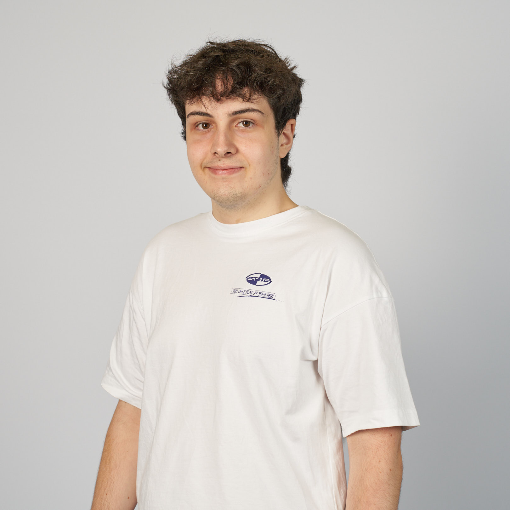
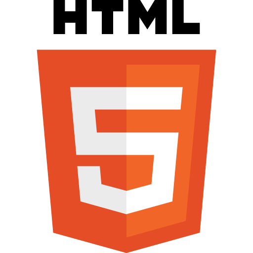
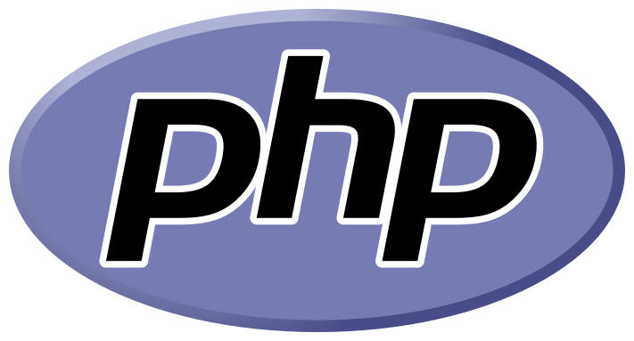
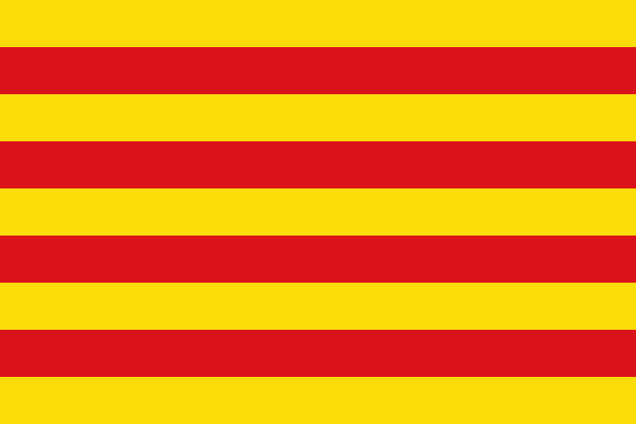

CFGS Administración de Sistemas Informáticos en Red (ASIX)
LaSalle Gràcia · 2025 – Actual

Sant Cugat del Vallès, Barcelona
Estudiante de CFGS ASIX en LaSalle Gràcia, con un fuerte interés en la administración de sistemas, ciberseguridad y hacking ético. Procedente del ámbito empresarial tras cursar ADE + Tecnología, aporto una visión analítica y estructurada a los entornos técnicos. Me considero una persona proactiva, autónoma y con gran capacidad de aprendizaje continuo.
LaSalle Gràcia · 2025 – Actual
Universitat Autònoma de Barcelona · 2023 – 2025
Lycée Français de Barcelone · 2022 – 2023



Catalán · NativoContexto: Proyecto personal de aprendizaje en ciberseguridad y Python.
Tecnologías: Python, sockets, Kali Linux, Netcat.
Descripción: Desarrollo de un keylogger básico con fines educativos para comprender cómo funcionan este tipo de herramientas a bajo nivel y cómo pueden detectarse y mitigarse en entornos reales.
Demuestra: Conocimientos de programación en Python, comunicación en red, comprensión de amenazas de seguridad y enfoque ético del hacking.
Aprendizaje: Programación orientada a eventos, uso de sockets, análisis de riesgos y responsabilidad en el desarrollo de herramientas de seguridad.
Contexto: Proyecto académico (CFGS ASIX).
Tecnologías: HTML5, CSS3, Flexbox, Grid.
Descripción: Desarrollo de un curriculum vitae en formato web siguiendo principios de diseño responsive, accesibilidad y buenas prácticas de HTML semántico.
Demuestra: Maquetación responsive, uso de pseudo-elementos, animaciones CSS, estructura semántica y modo impresión.
Aprendizaje: Organización de proyectos web, mobile-first, control visual con CSS y despliegue en producción.